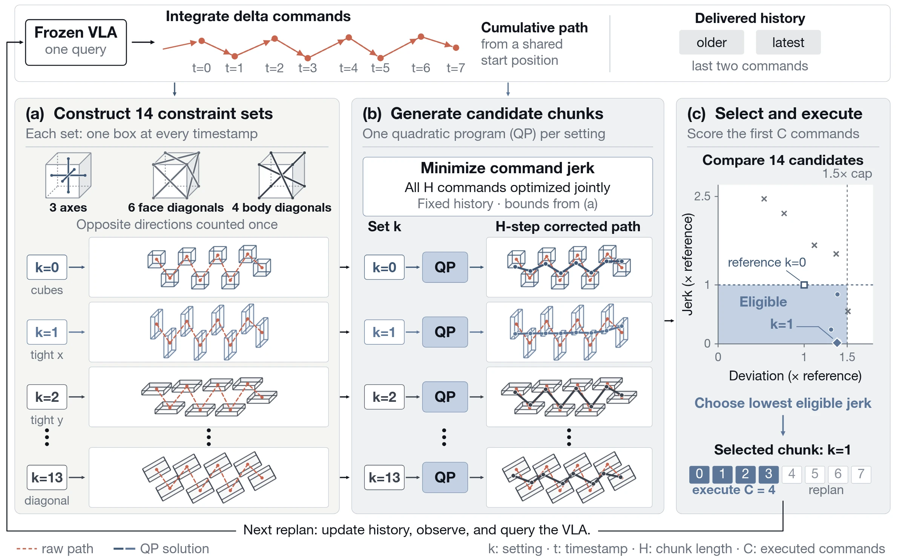

Geometry-Guided Reduction of Operational-Space Jerk in VLA Execution
Chunked VLA policies execute several commands per query, and jerk appears inside each chunk as well as at the replanning seam. The seam is not the only source of jerk. GROOVE corrects each new chunk around the raw 3D end-effector path, without retraining or additional VLA inference.
POSTECH, DI Lab
1Department of Computer Science and Engineering · 2Graduate School of Artificial Intelligence
POSTECH, Pohang, South Korea · Correspondence: Hwanjo Yu
This work has been submitted to the IEEE for possible publication. Copyright may be transferred without notice, after which this version may no longer be accessible.
Animations marked schematic illustrate the mechanism. Every number on this page comes from the manuscript, and the UR5e telemetry, trial videos, and LIBERO replays are recorded data.
vs raw, 400-episode LIBERO holdout
vs raw, 400-episode LIBERO holdout
vs raw execution, no retraining
vs raw, 50 matched UR5e pairs
Why Chunked VLA Policies Jerk
Chunked VLA policies jerk in two places: inside each generated action chunk, and at the seam where replanning replaces the unexecuted suffix. GROOVE searches directional correction regions in 3D around the raw end-effector path and bounds path deviation after every command.
- 01One cube and thirteen directional candidates.Equal-volume regions offer different ways to correct the same path. Select the lowest command-space jerk within a cube-relative deviation cap.
- 02No retraining or extra VLA inference.The regulator operates on each new chunk before execution, using the delivered commands to connect it smoothly.
- 0333.02% / 43.42% less translational / rotational EEF jerkon the LIBERO holdout, with success at 95.75% vs 93.75% for raw execution.
- 0429.09% less joint-current slewacross 50 matched UR5e pairs, alongside lower measured TCP jerk.
The Method and Experiments in 2:59
A narrated overview of the method and the UR5e and LIBERO experiments. The method diagrams use synthetic chunks.
Physical footage is reconstructed at 3.5 Hz and shown at a labelled 4× playback. The two hardware examples show matched trials in which both methods succeed.
Choose How to Correct the 3D Path
A places a cube or directional box at every raw-path timestamp. B generates a corrected chunk for each of fourteen settings. C selects an eligible chunk and executes its prefix.

- 01 · BoundOne cube, thirteen directionsEach setting k places one box at every raw-path timestamp: one cube, 3 axes, 6 face diagonals, and 4 body diagonals, all of equal volume.
- 02 · GenerateOne QP per settingAll H commands are optimized jointly, with the delivered history as the boundary condition and the bounds from step 01.
- 03 · SelectLowest eligible jerkCompare the 14 candidates and choose the lowest command-space jerk within the cube-relative deviation cap.
- 04 · ExecuteDeliver the prefixExecute the first C commands of the selected chunk, then update the history, observe, and query the VLA again.
Fourteen Settings, One Corrected Chunk
For each setting k = 0…13, one box bounds each timestamp of the same raw chunk. The full set contains one cube, 3 axes, 6 face diagonals, and 4 body diagonals.
An illustrative synthetic chunk with H = 8 and C = 4. Every corrected curve and selection score comes from the actual GROOVE solver. Drag the 3D view, select a stage or k, and highlight any timestamp.
Every LIBERO Task, Raw vs GROOVE
All 40 LIBERO tasks for both frozen policies, π0.5 and GR00T N1.7, replayed frame for frame from the logged executions. Same task, same initial state, same policy seed.
The executed end-effector path is projected through the true simulator camera. Rendered by replaying the recorded delivered commands in the LIBERO simulator; replay terminates at the same step count as the original logged episode. These 80 development pairs use seed 9361. The quantitative holdout below uses a separate set of 400 assignments per method.
Lower Jerk on the LIBERO Holdout
GROOVE achieves the largest translational and rotational EEF jerk reductions among the evaluated methods. All nine conditions share the frozen π0.5 checkpoint, initial states, seeds, and suite command caps.

| Method | Trans. reduction% ↑ | Rot. reduction% ↑ | Success% ↑ |
|---|---|---|---|
| Raw | Reference | Reference | 93.75% |
| RTC | 6.37%[4.73, 7.81] | 7.46%[6.15, 8.71] | 95.00% |
| SEAM (λ=.05) | 10.55%[9.04, 11.96] | 13.64%[12.49, 14.76] | 94.25% |
| SEAM (λ=.10) | 17.41%[15.79, 18.94] | 21.38%[19.92, 22.74] | 95.25% |
| SEAM (λ=.20) | 22.05%[20.27, 23.81] | 25.95%[24.43, 27.40] | 97.25% |
| POTR | 10.92%[9.32, 12.42] | 13.03%[11.66, 14.31] | 95.50% |
| Overlap ensemble | 18.29%[16.73, 19.76] | 21.63%[20.31, 22.83] | 96.25% |
| LiPo-QP adapter | 10.84%[8.81, 12.77] | 8.17%[5.35, 10.97] | 96.00% |
| GROOVE | 33.02%[31.02, 34.97] | 43.42%[41.38, 45.36] | 95.75% |
Each query predicts H = 10 commands and delivers C = 5. Whiskers and brackets show task-clustered 95% CIs. Jerk reductions are relative to raw execution. Success changes by +2.00 percentage points [−0.25, 4.50] for GROOVE vs raw. Query and command budgets are shared across methods. Runtime and realized path deviation are measured separately.
Lower TCP Jerk on a Real UR5e
Across stacking and trash disposal, the UR5e’s 125-Hz telemetry records 16.39% / 19.49% lower translational / rotational TCP jerk and 29.09% lower joint-current slew under the deployed execution stack.

Success is 52% (26/50) with GROOVE and 46% (23/50) with raw execution; the difference is +6.00 percentage points [−14.00, 26.00]. Brackets denote 95% confidence intervals.
All 100 hardware trials
All 50 matched pairs, including successes and failures. Each tile shows raw π0.5 on the left and + GROOVE on the right.
The footage is reconstructed at 3.5 Hz and played at 4× speed. The colored trace is the 125-Hz TCP path projected through a camera model fitted on the campaign footage. Videos load as they scroll into view. Badges mark task completion under the shared 300-command cap (raw 23/50, GROOVE 26/50).
GROOVE at a Glance
Short answers drawn from the manuscript. The same text appears in llms.txt.
What is GROOVE?
GROOVE (Geometry-Guided Reduction of Operational-Space Jerk in VLA Execution) is an online regulator for chunked vision-language-action (VLA) robot policies. Before each new action chunk is executed, it corrects the chunk around the raw three-dimensional end-effector path to reduce jerk within the chunk and at the replanning boundary, without retraining or additional VLA inference.
Where does jerk in chunked VLA execution come from?
Chunked VLA policies execute several commands per query. Jerk appears inside each generated action chunk and at the seam where replanning replaces the unexecuted suffix, and it can induce oscillatory motion and sharp actuator transients.
How does GROOVE correct a chunk?
GROOVE uses 14 settings: one cube and thirteen equal-volume directional regions (3 axes, 6 face diagonals, and 4 body diagonals). For each setting it places one box at every raw-path timestamp and solves a quadratic program that optimizes the whole chunk with the delivered commands as boundary conditions. It then selects the candidate with the lowest command-space jerk under a reference-relative deviation cap and executes its first C commands.
Does GROOVE need retraining or extra policy calls?
No. GROOVE operates on each new chunk from a frozen policy before execution. It needs no retraining and no additional VLA inference calls.
What results does GROOVE achieve?
On a held-out LIBERO benchmark with 400 episodes per method, GROOVE reduces translational and rotational end-effector jerk by 33.02% and 43.42% relative to raw execution, the largest reductions among the evaluated methods, with task success of 95.75% vs 93.75% for raw execution. Across 50 matched UR5e pairs, it reduces translational and rotational TCP jerk by 16.39% and 19.49% and joint-current slew by 29.09%.
Which policies and robots were evaluated?
The LIBERO holdout uses a frozen π0.5 checkpoint that predicts H = 10 commands and delivers C = 5 per query. The LIBERO replay videos also show GR00T N1.7. The hardware campaign runs π0.5 on a UR5e for stacking and trash disposal.
Are the paper and code available?
The preprint is on arXiv (2609.13695). Code, evaluation scripts, and experiment artifacts will be released upon publication.
Abstract
Chunked vision–language–action (VLA) policies execute several commands per query, but jerk within chunks and across replanning boundaries can induce oscillatory motion and sharp actuator transients. We present GROOVE, an online regulator that searches directional correction regions around the raw three-dimensional end-effector (EEF) path, without retraining or additional VLA inference. It optimizes the new chunk using delivered commands as boundary conditions, reducing boundary and within-chunk jerk while bounding cumulative translation and local axis–angle deviation from the raw plan after every command. Using quadratic programs (QPs), GROOVE generates a cube reference and thirteen directional candidates, then selects the one with the lowest command-space jerk under a reference-relative deviation cap. On a held-out LIBERO benchmark, GROOVE achieves the largest reductions among the evaluated methods, reducing translational and rotational EEF jerk by 33.02% and 43.42%, respectively, with task success of 95.75% versus 93.75% for raw execution. Across 50 matched UR5e pairs with measured execution timing, it reduces translational and rotational tool-center-point (TCP) jerk by 16.39% and 19.49% and joint-current slew by 29.09%.